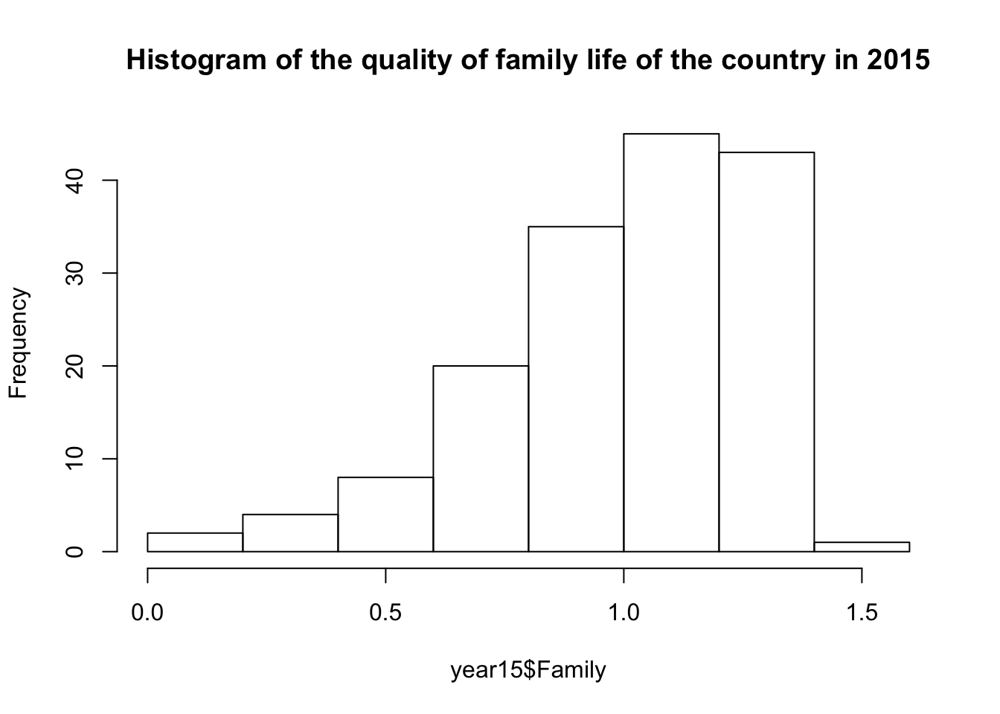
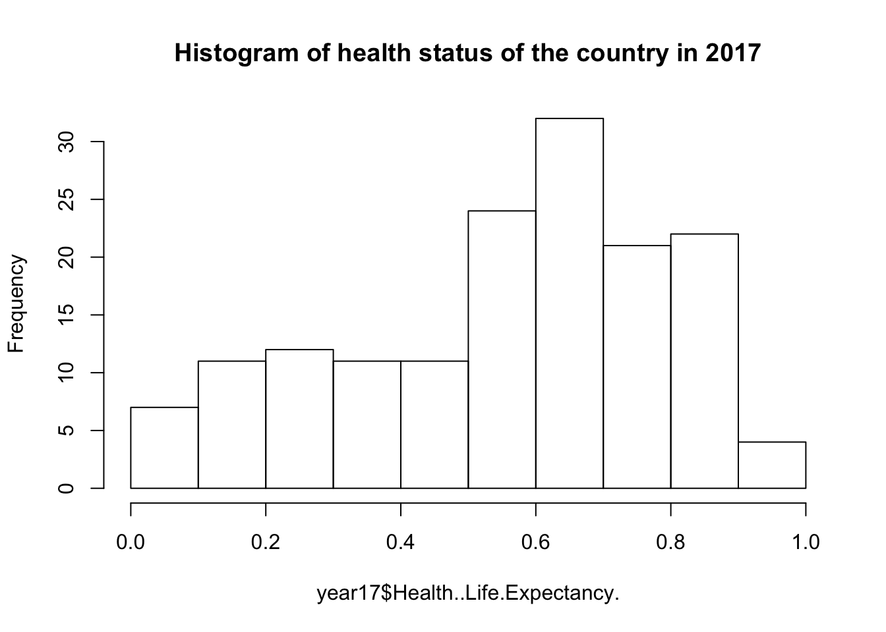

I am going to select variables “happiness score”, “economy”, “family”, “health”, and “freedom” to analyze my hypotheses. Happiness score is a score given to a country based on adding up the rankings that a population has given to each category in the report. Economy is GDP per capita of the country. Family represents the quality of family life. And health is the healthcare availability and average life expectancy in the country. Lastly, freedom represents how much an individual is able to conduct herself based on her free will. Now, I use R-studio to calculate the standard deviations and means of my variables and draw the histograms of them:
setwd("~/Downloads/Website_template")
year15<-read.csv("2015.csv")
year16<-read.csv("2016.csv")
year17<-read.csv("2017.csv")
sd(year15$Happiness.Score)## [1] 1.14501mean(year15$Happiness.Score)## [1] 5.375734hist(year15$Happiness.Score,main="Histogram of Happiness Score of the country in 2015")sd(year15$Economy..GDP.per.Capita.)## [1] 0.4031208mean(year15$Economy..GDP.per.Capita.)## [1] 0.8461372hist(year15$Economy..GDP.per.Capita.,main="Histogram of GDP per capita of the country in 2015")sd(year15$Family)## [1] 0.2723691mean(year15$Family)## [1] 0.9910459hist(year15$Family,main="Histogram of the quality of family life of the country in 2015")
sd(year15$Health..Life.Expectancy.)## [1] 0.2470778mean(year15$Health..Life.Expectancy.)## [1] 0.6302594hist(year15$Health..Life.Expectancy.,main="Histogram of health status of the country in 2015")sd(year15$Freedom)## [1] 0.1506928mean(year15$Freedom)## [1] 0.4286149hist(year15$Freedom,main="Histogram of free will level of the country in 2015")sd(year16$Happiness.Score)## [1] 1.141674mean(year16$Happiness.Score)## [1] 5.382185hist(year16$Happiness.Score,main="Histogram of Happiness Score of the country in 2016")sd(year16$Economy..GDP.per.Capita.)## [1] 0.4125954mean(year16$Economy..GDP.per.Capita.)## [1] 0.9538798hist(year16$Economy..GDP.per.Capita.,main="Histogram of GDP per capita of the country in 2016")sd(year16$Family)## [1] 0.2667057mean(year16$Family)## [1] 0.7936211hist(year16$Family,main="Histogram of the quality of family life of the country in 2016")sd(year16$Health..Life.Expectancy.)## [1] 0.2293492mean(year16$Health..Life.Expectancy.)## [1] 0.557619hist(year16$Health..Life.Expectancy.,main="Histogram of health status of the country in 2016")sd(year16$Freedom)## [1] 0.1455068mean(year16$Freedom)## [1] 0.3709939hist(year16$Freedom,main="Histogram of free will level of the country in 2016")sd(year17$Happiness.Score)## [1] 1.13123mean(year17$Happiness.Score)## [1] 5.354019hist(year17$Happiness.Score,main="Histogram of Happiness Score of the country in 2017")sd(year17$Economy..GDP.per.Capita.)## [1] 0.4207927mean(year17$Economy..GDP.per.Capita.)## [1] 0.9847182hist(year17$Economy..GDP.per.Capita.,main="Histogram of GDP per capita of the country in 2017")sd(year17$Family)## [1] 0.2872629mean(year17$Family)## [1] 1.188898hist(year17$Family,main="Histogram of the quality of family life of the country in 2017")sd(year17$Health..Life.Expectancy.)## [1] 0.2370727mean(year17$Health..Life.Expectancy.)## [1] 0.5513408hist(year17$Health..Life.Expectancy.,main="Histogram of health status of the country in 2017")
sd(year17$Freedom)## [1] 0.1499973mean(year17$Freedom)## [1] 0.408786hist(year17$Freedom,main="Histogram of free will level of the country in 2017")Because my main hypothesis is that people are happier from year 2015 to year 2017. I am going to test equality of these three years’ happiness scores first. Thus, I will use Kruskal-Wallis test to examine the equality of these three years’ happiness scores. The Kruskal-Wallis H test is a rank-based nonparametric test that can be used to determine if there are statistically significant differences between two or more groups.
In addition, happiness also is related to many factors such as economic status, family status, health status and freedom status. Thus, my hypothesis 2 will be that there is an association between happiness and economy. Hypothesis 3 will be that there is an association between happiness and quality of family life. Hypothesis 4 will be that there is an association between happiness and health status. And hypothesis 5 will be that there is an association between happiness and freedom status. I will run the test for association/correlation between paired samples for all of these four hypotheses. Correlation test is used to evaluate the association between two or more variables.